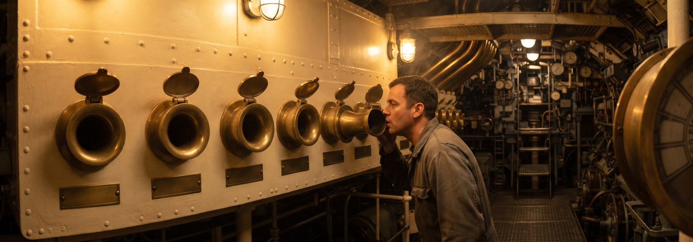

This tool checks one Python file for an OS command injection pattern, then optionally runs four external tools over the same file. Run it as python3 main.py FILEPATH; the positional names a single file, --output and -o default to output.txt, and each external tool has its own disable flag (bandit, flake8, pylint, pyre).
The built in check is a plain substring search over the whole file held as one string. It reports a potential vulnerability when the file contains one of os.system(, subprocess.call(, subprocess.Popen( or subprocess.run( and also contains one of input(, sys.argv[ or os.environ[ anywhere in it. It does no data flow analysis: input gathered in one function and a command run with a constant string in another is flagged exactly as input passed straight into a command. Calls such as os.popen(, subprocess.getoutput( and eval( are not recognised at all.
Intermediate tool files use fixed names in the caller's working directory and are deleted at the start of each run; two runs at once in one directory write over each other. Pyre output is logged only and never enters the combined file, and Pyre needs a configured project. A missing tool logs an error and the run continues. The built in verdict alone sets the exit status: a potential vulnerability exits 1, a clean verdict exits 0 even when a tool was missing or the external tools found things, and a failure to write the combined file exits 1.
Recorded fault, preserved in the README: its closing line reads Copyright (c) ShadowStrikeHQ and claims no separate LICENSE file is included, while a LICENSE file is present in the repository and carries the MIT License.

